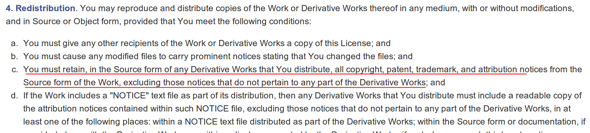
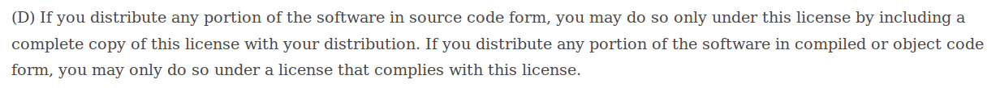

感謝您對「自由軟體鑄造場」的支持與愛護，十多年來「自由軟體鑄造場」受中央研究院支持，並在資訊科學研究所以及資訊科技創新研究中心執行，現已完成階段性的任務。 原網站預計持續維運至 2021年底，網站內容基本上不會再更動。本網站由 Denny Huang 備份封存。
也紀念我們永遠的朋友 李士傑先生（Shih-Chieh Ilya Li）。
也紀念我們永遠的朋友 李士傑先生（Shih-Chieh Ilya Li）。
淺論程式源碼與目的碼在自由開源軟體授權條款裡的同與異
Created at Thursday, 31 July 2014 12:13 Last Updated on Thursday, 31 July 2014 12:26
程式源碼 (Source Code) 與目的碼（Object Code，註一）是軟體程式存在的兩種基本型態，前者指的是電腦程式可供後續增編修改的格式，有時可被直接執行，但多半時候必須經編譯或界定程序之後才能被執行，後者則是能夠直接供電腦機器判讀的執行檔格式，但因已經過編譯程序，故除非經過反組譯或是還原工程，否則一般人無法直接觀察目的碼，來了解該電腦程式的演算過程及運算邏輯 (algorithm)。一般來說，軟體程式可以擇一或是同時透過這兩種型態來被散布，就法律論理上，其在著作權法上是被視為是同一作品不同形態的表現，故其表現形式雖不同，但法律定位完全相同。過去電腦程式目的碼是不是能受到著作權法保障是有疑慮的，畢竟這樣的著作格式並不如同一般受著作權保護的客體：詩、詞、書、畫、文章、音樂、電影般，能被直接閱讀、聆聽、感受，和了解，不過美國於 1983 年 Apple Computer, Inc. v. Franklin Computer Corp. 一案中，承審法官在反覆的論理之後，判定目的碼亦為美國著作權法保護的客體之一，同時，因其無法為人類直接了解之故，更進一步認定其與程式源碼具有同一性關係（註二）。此一判決也影響其他各國就此議題的認識，此後多數法律見解皆偏向於將程式源碼與目的碼，視為電腦程式的一體兩面，故表現的方式雖有差異，但被著作權法保護的本質與地位相同。這樣的解讀態度適用在一般私有軟體 (proprietary software) 上，固然不會有太大的問題，畢竟私有軟體在授權使用上的基本規則為「權利人保留所有權利 (all rights reserved)」，故使用他人電腦程式時，未經授權方同意的方式，基本上都是不被法律所允許的，然而，許多的自由開源軟體 (Free and Open Source Software) 專案及其授權條款，蘊含著一種盡量將程式源碼提出來讓後手使用者增刪修改並便利應用的態度，故在其授權條款中，可以看到許多的內容是明確地針對程式源碼或目的碼所作的，略有差異的義務性要求，此項特點多為一般使用者所不知或忽略，而這方面的資訊，也正是本文希望透過特定條款的例示與說明，所要傳達給大家的。
【多數的自由開源軟體授權條款仍將程式源碼和目的碼進行一致處理】
就比例來看，自由開源軟體授權條款中的程式源碼與目的碼，在義務規定方面具有處理上的一致性，仍是大多數的常態，例如一般最容易被使用者認識到的 BSD 授權類別，以及 GPL 授權類別，就還是維持這樣的基本態度。以 BSD 類別這一系列條款為例，其中最基本的義務規定是：使用者在散布程式源碼的同時必須保留原程式的著作權聲明、義務條款內容以及免責聲明。故當使用者採取透過目的碼形式散布軟體的時候，上述這些文字聲明也可能會被編譯成為無法閱讀的目的碼，因此 BSD 系列條款規定，使用者必須重建上述的文字內容，讓取得目的碼的後手，一樣可以在合理的狀況下閱讀到這些聲明（註三），而若達到此一標示義務，基本上就 BSD 授權類別來說，就已完善地達到程式源碼與目的碼一致的義務性要求。可以說，BSD 授權類別的自由開源軟體專案，程式的釋出者奉行的是一種「求名以聞達」並讓使用者在「最低義務限制」下運用軟體的態度，故對於程式源碼和目的碼並不會刻意作差別化的處理，只要使用者就源碼格式或目的碼格式的散布，都能善盡原始作者的顯名要求，即可。
另外，以 GPL 這一系列條款的自由開源軟體授權條款為例，因其設置的主要目的是維持程式源碼的流通，與便利後手的改作。故本質上 GPL 授權類別更是將程式源碼與目的碼視為完全相同的一件事，並要求當程式目的碼被散布的時候，使用者也必須要提供其「相應完整的程式源碼 (corresponding source)」給予後手，為此，GPL 系列條款便規定：修改後所產生的衍生程式 (derivative work)，無論呈現的方式是程式源碼格式還是目的碼格式，其散布時必須要繼續採用相同的授權條款來提供，所以當使用者要散布衍生程式目的碼的時候，也一樣必須依照 GPL 系列條款的規定，來提供衍生程式的程式源碼。這種為了維持程式源碼的流通，而規定衍生程式的程式源碼與目的碼，均必須繼續採用相同授權條款來散布的規定，正是源碼義務與目的碼義務一致性呈現的最佳範例。
【少數條款中程式源碼與目的碼義務規定有著極大的差異】
不過並非所有的自由開源授權條款，在程式源碼與目的碼的義務規定上，都具有著完全的一致性，少數的自由開源軟體授權條款，對程式源碼與目的碼在散布上的運用方式與義務性規定是有許些差異，這讓使用者在散布軟體程式的時候，有機會因為散布軟體型態的不同，而可以依循不同的規定，進而產生完全不同的運用效果。究其要理，這是因為當前自由開源軟體的推動，已不再是以單純社群分享理念、或學界顯名態度為唯一的推動動機，近年大型的自由開源軟體專案，背後多有商業公司的資源與力量浥注，故不少此一性質的參與者，試著將其調合開源分享模式與便利商業運轉的想法，編寫至其所運用的自由開源軟體授權條款裡，以下所例示，由 Apache Software Foundation 編撰，為 Google Inc. 於各專案大力採用的 Apache License, Version 2.0 (Apache-2.0)，以及微軟 (Microsoft Corporation) 所編撰與推行的 Microsoft Public License (MS-PL) 即為著例，此二條款就程式源碼與目的碼的散布型態，便有著寬嚴不一的區別處理。
以 Apache-2.0 這份條款為例，第 4 條第 c 款規定，使用者散布修改後衍生程式的程式源碼時，必須保留原程式中的各項聲明，但是當散布衍生程式的目的碼時，卻沒有完整重建這些聲明細節的義務（註四），僅要求目的碼格式的融合與使用，必須給予後手一份 Apache-2.0 授權條款全文或與 Apache-2.0 義務性規定完全相容的其他條款全文，標註哪些原 Apache-2.0 授權檔案已被修改或更動，並保留與適當調整原 Apache-2.0 專案裡 "NOTICE" 檔案裡的相關資訊即已足。這樣的規定與上述 BSD 系列條款對照看來，可以了解到，Apache-2.0 對於散布衍生程式源碼的義務規定，並沒有完全連貫到散布目的碼的義務規定之中，主要的原因，可以說在商業散布與運用的環境當中，一定程度以較寬鬆的態度來便利目的碼型態的運用方式。

▲ 圖1：Apache-2.0 第 4 條第 c 款規定內容。
另外一個有趣的例子則是 MS-PL。這份由微軟所制定的自由開源授權條款，其在第 3 條第 (D) 款規定，當使用者以程式源碼型態散布軟體的任何一部份，這些程式源碼仍必須透過來 MS-PL 來授權，同時，使用者還必須將 MS-PL 的全文內容隨程式源碼一起附上、一起散布，來提供給程式後續的下載與使用者。但是當使用者以目的碼型態散布軟體時，MS-PL 卻允許使用者能夠為這些目的碼選擇 MS-PL 以外的條款來散布，只要所選擇的條款是符合 MS-PL 的義務性規定即可（註五）。微軟對 MS-PL 這樣的處置，主要是希望在程式源碼的格式，仍強力要求改作者必須採完全相同的授權模式，將其改作的成果提供出來，如此一來，未來微軟將可以完全不用就授權狀態進行調整，即可將外部改作者對原程式進行的修改，匯入到下一個 MS-PL 授權程式的更新版本裡，而在目的碼格式方面，由於微軟及其合作廠商的共工狀態，當前多半仍是產出商業性方案，故為了便利合作廠商未來能夠採單一私有授權來運用整體專案，故就 MS-PL 授權程式的目的碼格式，規劃了遠寬鬆於程式源碼格式的運用限制。

▲ 圖2：MS-PL 第 3 條第 (D) 款規定內容。
【結語】
電腦程式的著作權利人，針對程式源碼、目的碼兩種型態，得以再依條款內容規劃出不同運用方式的現象，相對於著作權法所保護的其他詩詞書畫等著作客體來說，是一個特殊的現象。以最典型的文章、圖畫等傳統著作來說，從開始被創作出來到完成為止，都只有透過一種形式來呈現：文章透過文字、圖畫透過顏料的色彩，因此這些傳統著作不需要被轉換成為另外一個形式，就可以被閱讀或是欣賞。但是軟體程式的開發過程是以程式源碼的形式存在，而等到要安裝、執行時，因功能性的配置或與其程式框架的配合，才去將程式源碼轉換成為機械能夠直接辨識與執行的目的碼，進而被安裝到電腦系統上來執行運作，可以說，電腦程式擁有的兩種表現型態，讓其在運用上迥異於其他的著作類型。但有趣的是，當代因數位化工具、輔具的大量運用，許多詩詞書畫、影音、多媒體等著作權保護客體，也有很大的機會是直接在電腦程式的控制下被直接編輯產生，從而有其原生數位編輯檔、以及列印呈現檔的不同儲存格式。部份國內外的論述者，已經開始就此議題展開討論，並且在商業運用的環境下，亦不少契約已經針對「編輯檔」與「列印檔」之間，律定了不同的運用模式與權限差異。
所以說，可以同時透過程式源碼與目的碼兩種型態，來產生不同的運用模式，是軟體程式，尤其是自由開源軟體領域裡的特殊之處，而雖然大部分的授權條款對於程式源碼與目的碼的運用規則，有著相當的一致性，不過仍有少數條款對於兩者有著不同的義務規定，而這股分殊化的實作與運用概念，甚至也開始擴散到數位化的其他著作權素材裡，故未來讀者在了解自由開源授權條款，或是接觸新近 3D 列印技術與實作的領域時，也可以注意此種程式源碼與目的碼運用規定不一、編輯檔與列印檔的應用要求不同的狀況，以找出最符合期待與最多益處的運用模式！
----
註一：所謂目的碼，指的是能夠直接供電腦機器判讀的執行檔格式 (binary form)，故或有稱之為「機器碼 (Machine Code)」、「機械碼」，此亦目前市面上取得私有軟體 (proprietary software) 使用授權時，最普遍存在的形式。
註二：進一步的相關分析與見解，可參閱，陳家駿、呂榮海合著，電腦軟體著作權，蔚理法律出版社，1989 年 3 月，頁 13；益思科技法律事務所，自由軟體之著作權問題研究，智慧局報告，頁 122-124，2006 年。
註三：BSD 系列條款中，目前較為常見的主要有 BSD-2-clause 與 BSD-3-clause 這兩款，而這兩款均有本段所提到的義務規定。
註四：原文截錄如右為：You must retain, in the Source form of any Derivative Works that You distribute, all copyright, patent, trademark, and attribution notices from the Source form of the Work, excluding those notices that do not pertain to any part of the Derivative Works; and；而在透過目的碼型態來散布原程式的情況下， Apache-2.0 則並沒有要求使用者必須重建各項聲明內容的全文，不過實務上，筆者都會強烈建議重建其中基本的著作權與授權聲明，因為自由開源軟體著作權人將軟體無償授權出來，多有期望名聲得以因此聞達的隱性目的，故若在散布目的碼時，重建基本重要聲明，可以讓原軟體著作權人與開發社群獲得其應有的名聲。
註五：關於 MS-PL 的詳細介紹請參見：葛冬梅，來自封閉陣營的 MS-PL 與 MS-RL，https://www.openfoundry.org/tw/legal-column-list/8263--ms-pl-ms-rl。
OSSF Newsletter : 第 246 期 專訪中央大學「支援行動裝置使用者與虛擬實驗平台之雲端技術研究」整合型計畫
Tags: source code, object code, obligation clauses, copyright, machine code, binary form, 源碼, 目的碼, 義務性規定, 著作權, 機械碼, 二進位格式,
Category: Legal Column
Special


Open Source Software Foundry‧ Best Viewed with IE7.0 or Firefox2.0 above, 1024x768 Resolution. E-Mail：contact@openfoundry.org
Address：No.128, Sec.2, Academia Rd., Institute of Information Science, Academia Sinica, Nangang District, Taipei City 11529, Taiwan (R.O.C).
Privacy Policy. Terms-of-use
Address：No.128, Sec.2, Academia Rd., Institute of Information Science, Academia Sinica, Nangang District, Taipei City 11529, Taiwan (R.O.C).
Privacy Policy. Terms-of-use